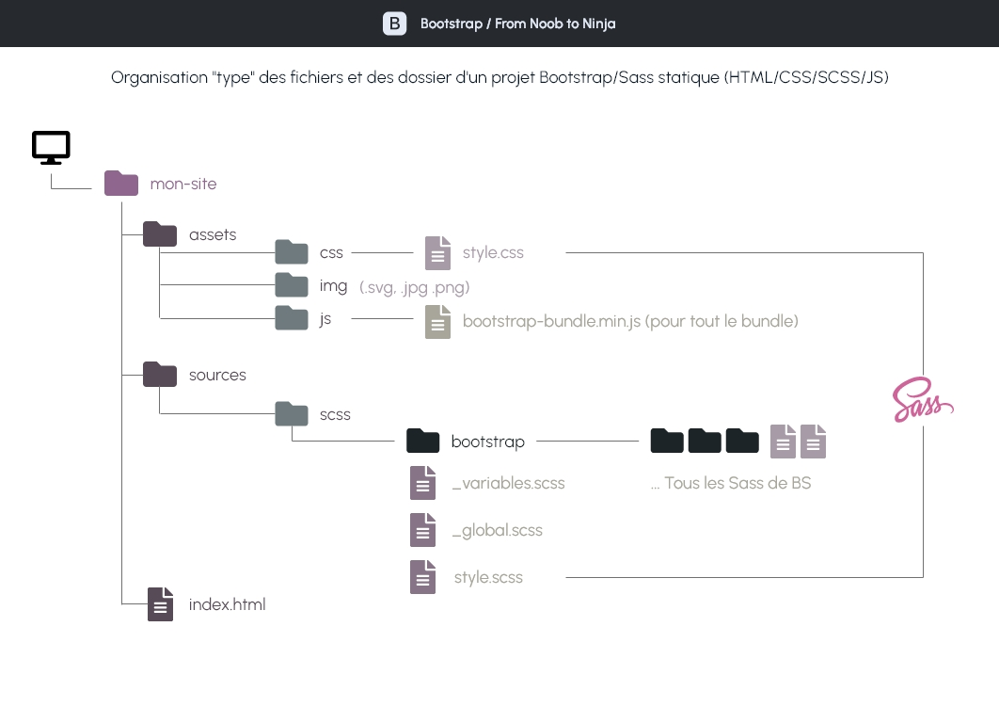
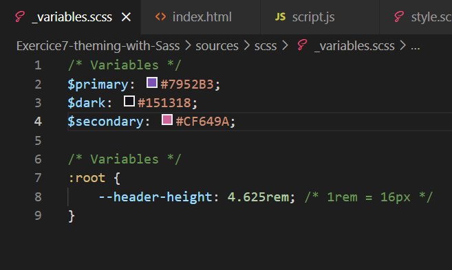

Bootstrap From Noob to Ninja
Utilisez  pour exploiter toute la
puissance du theming
pour exploiter toute la
puissance du theming
La marche à suivre pour réaliser ses propres thèmes Bootstrap
En savoir plusVous avez regardé la vidéo ?
Vous allez aimer ce qui va suivre

La démarche
Charger ses propres SCSS avant ceux de Bootstrap, afin d'écraser les valeurs par défaut.
Vous pouvez ainsi changer les variables telles que $primary par exemple,
pour
changer la couleur primaire du thème.
Pour le thème ici présent
Nous avons commencé par modifier les variables des couleurs du thème par
défaut
de Bootstrap. On charge nos propres valeurs assignées aux variables pré-codées par
défaut
par BS. Nous les répertorions dans le document _variables.scss
